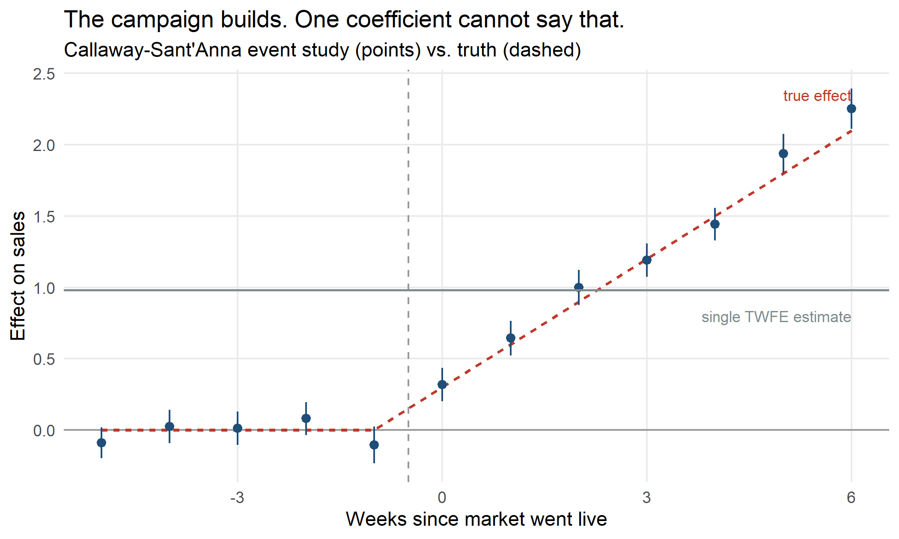

If You Roll Out Market by Market, Your Lift Estimate Is Probably Too Low
Staggered geo rollouts break the regression almost everyone reaches for first.
Geo experiments are having a moment. With a large share of individual-level conversion signal now gone, measurement has moved back up to the market level: split the country into regions, turn the campaign on in some of them, compare. It survives signal loss because it never needed to track a person in the first place.
But almost nobody turns a campaign on everywhere at once. Budget, inventory, and legal approvals mean markets go live in waves: ten DMAs in March, ten more in May, the rest in July. That is a staggered rollout, and it quietly breaks the regression that most teams reach for first.
Here is the problem on data where I know the right answer, because I generated it.
A rollout where the truth is known
Three hundred markets, twenty weeks. Markets go live in three waves (weeks 8, 12, and 16), and a quarter of them never launch at all. The campaign builds. It lifts sales by 0.30 in its first week and grows with exposure, which is what a real campaign does as awareness accumulates.
library(data.table)
library(fixest)
library(did)
set.seed(2026)
n_geo <- 300
n_per <- 20
geo <- data.table(
geo_id = 1:n_geo,
g = sample(c(8, 12, 16, Inf), n_geo, replace = TRUE, prob = rep(.25, 4)),
geo_fe = rnorm(n_geo, 0, 1)
)
panel <- CJ(geo_id = 1:n_geo, week = 1:n_per)
panel <- merge(panel, geo, by = "geo_id")
panel[, exposure := fifelse(is.finite(g) & week >= g, week - g, NA_real_)]
panel[, tau := fifelse(is.na(exposure), 0, 0.30 * (exposure + 1))]
panel[, treated := as.integer(!is.na(exposure))]
panel[, sales := 10 + geo_fe + 0.05 * week + tau + rnorm(.N, 0, 0.5)]
true_att <- panel[treated == 1, mean(tau)]Averaged over every treated market-week, the true average effect is 1.65. That is the number any honest estimator should return.
The default answer is far too low
The standard move is a two-way fixed effects regression with market effects, week effects, and one treatment dummy:
m_twfe <- feols(sales ~ treated | geo_id + week, data = panel)
twfe <- coef(m_twfe)[["treated"]]
twfe
## [1] 0.9809783## True ATT : 1.652
## TWFE : 0.981
## Bias : -40.6%The regression is fine. The standard error is small. Nothing in the output looks wrong. And the answer is off by roughly 41% in the direction that costs you budget. It makes the campaign look weaker than it is.
Why it happens
Two-way fixed effects doesn’t compute one comparison. It computes a weighted average of every two-group, two-period comparison available in the panel, and some of those comparisons use already-treated markets as the control group.
That is the flaw. When the wave-2 markets go live in week 12, the regression happily uses the wave-1 markets, treated since week 8 and by now four weeks into a growing effect, as a comparison. Their outcome is still rising because of the campaign. Subtracting that rise treats real campaign lift as if it were the baseline trend, and the estimate gets dragged down. Goodman-Bacon (2021) decomposed exactly this. Those bad comparisons can even enter with negative weight, which is how a genuinely positive campaign can produce a negative coefficient.
The condition that triggers it is not exotic. You need only two things: staggered timing and effects that change with exposure. Every campaign rollout I have seen has both.
The fix
Callaway and Sant’Anna (2021) estimate the
effect separately for each cohort at each period, using only clean controls, meaning markets
that are not yet live, and then aggregate. In R that is the did package:
panel[, gvar := fifelse(is.finite(g), g, 0)] # 0 codes "never treated"
cs <- att_gt(
yname = "sales", tname = "week", idname = "geo_id", gname = "gvar",
data = as.data.frame(panel),
control_group = "notyettreated",
bstrap = TRUE, cband = FALSE
)
simple <- aggte(cs, type = "simple", na.rm = TRUE)## True ATT : 1.652
## TWFE : 0.981 (bias -40.6%)
## Callaway-SA : 1.713 (bias +3.7%)That recovers the truth to within sampling error. The small remaining gap is weighting.
aggte(type = "simple") weights group-time cells by their size, which is not identical to
averaging over treated market-weeks. It is noise rather than bias, about
1.1 standard errors,
against a TWFE gap of
21.
Read the curve, not the scalar
The single number was never the interesting part. Because the effect grows, what you actually want is the shape:

Pre-launch estimates sit flat at zero, which is the design check. After launch the effect climbs steadily, and the flat grey line shows what the single TWFE coefficient claims instead. A campaign that pays back over six weeks and one that pays back instantly can produce the same scalar. Only one of them justifies a longer flight.
The same trap in Python
Nothing here is an R problem. It is a data problem, and the identical bias appears in Python. For a balanced panel you don’t even need a package, because the two-way within estimator is just OLS on the double-demeaned series.
import numpy as np, pandas as pd
rng = np.random.default_rng(2026)
n_geo, n_per = 300, 20
g = rng.choice([8, 12, 16, np.inf], size=n_geo, p=[.25] * 4)
geo_fe = rng.normal(0, 1, n_geo)
geo_id = np.repeat(np.arange(n_geo), n_per)
week = np.tile(np.arange(1, n_per + 1), n_geo)
df = pd.DataFrame({"geo_id": geo_id, "week": week,
"g": g[geo_id], "geo_fe": geo_fe[geo_id]})
df["exposure"] = np.where(df.week >= df.g, df.week - df.g, np.nan)
df["tau"] = np.where(df.exposure.notna(), 0.30 * (df.exposure + 1), 0.0)
df["treated"] = df.exposure.notna().astype(int)
df["sales"] = (10 + df.geo_fe + 0.05 * df.week + df.tau
+ rng.normal(0, 0.5, len(df)))
def twoway_demean(col):
x = df[col] - df[col].mean()
x = x - x.groupby(df.geo_id).transform("mean")
x = x - x.groupby(df.week).transform("mean")
return x
y, d = twoway_demean("sales"), twoway_demean("treated")
twfe = (d @ y) / (d @ d)
print(f"True ATT : {df.loc[df.treated == 1, 'tau'].mean():.3f}")
## True ATT : 1.634
print(f"TWFE : {twfe:.3f}")
## TWFE : 0.919Same understatement, different random draws. R and NumPy do not share a generator, so the
digits will not match, only the conclusion. For the Callaway-Sant’Anna estimator itself,
Python has differences and
diff-diff. The latter also covers synthetic DiD and
Honest DiD sensitivity analysis.
What to do on Monday
If you are measuring a staggered rollout:
- Check whether your timing is actually staggered. If every market launched the same week, plain DiD is fine and none of this applies.
- Assume your effect is dynamic. Awareness builds, and so does the bias. Treating the effect as one constant number is the assumption that breaks TWFE, not the staggering itself.
- Never let an already-treated market serve as a control. This is the whole bug. Use not-yet-treated or never-treated markets.
- Report the event-study curve, not one coefficient. The shape is the decision-relevant output. It tells you the payback period.
- Treat flat pre-trends as a check you passed, not a proof. Parallel trends is an assumption about an unobservable counterfactual. If the decision is expensive, run a sensitivity analysis rather than pointing at the pre-period.
The uncomfortable version of this: if you have been sizing incrementality off staggered rollouts with a TWFE regression, your campaigns may have looked systematically weaker than they are, and the budget decisions that followed inherited that error.
Estimator details, the Goodman-Bacon decomposition, and the assumptions behind each of these designs are covered in Experimental Design, Volume 4 of A Guide on Data Analysis.
Mike Nguyen, PhD
My research interests include marketing, and social science.